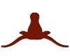

Terms of Use:
By using this service you agree to abide by the following:
- You will only use the e-mail alias for non-commercial purposes
- You will not use this service to send SPAM
- You will not hold me or any person associated with the maintenance of this website liable for any damages, direct or indirect, caused by use of this service
- I and any person associated with the operation of this service are not responsible for failure of the service to operate correctly.
- E-mail aliases are on a first-come, first-served basis. There is no guarantee that you will be able to secure a particular alias.
- I reserve the right to change this terms of service.
- I reserve the right to delete any alias account that is violating the Terms of Service or causing other problems with the service operating.
Privacy Info:
- The e-mail address you signup for and the e-mail address you supply for forwarding will not be given out to anyone unless we are required by a court order to do so.
- The Terms of Service may be changed periodically, and if that occurs then you will receive an e-mail to your alias with the new terms of service.
- You may also receive periodic e-mails with updates about the system status (such as going down for maintenance).
- You will NOT receive unsolicited messages from this service.
- When you initially signup for an alias you will receive a confirmation e-mail if the signup was successful.
- The only information we collect is your desired @texasbites.com alias, your forwarding e-mail address, and a password.
If you violate any of the Terms of Service your account will be subject to deletion and you may be disallowed from accessing texasbites.com.
Please report spam abuse to spam-abuse@texasbites.com.
Sign Up
By submitting this form you are agreeing to the Terms of Service above.
Instructions: This service provides an e-mail forwarding alias. You must have an existing e-mail address in order to use this service. You pick your desired @texasbites.com alias and it will forward any messages sent to it to your forwarding e-mail address. Also of note is that some e-mail spam filters may initially filter out messages forwarded to you (such as hotmail.com's). Most e-mail services provide a way to allow the e-mail through. Hotmail for example will most likely initially filter messages into your Junk Mail folder. To fix this just send yourself a test message at your @texasbites.com alias and then go into your Hotmail Junk Mail folder, select the forwarded e-mail, and click on the This is not junk mail button.
Copyright 2001 by Rodney Beede